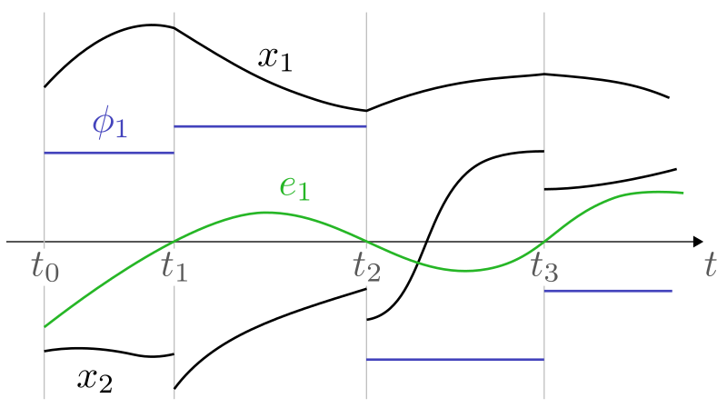
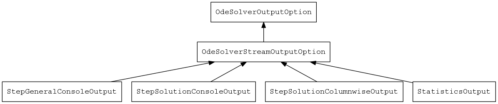
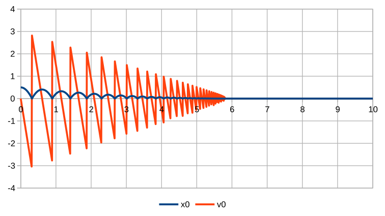

Russian Supercomputing Days
Sept. 25-26 2017, Moscow, Russia
$\dot{\bf x} = {\bf f}(t, {\bf x}, \phi), \quad {\bf x}\bigr|_{t=t_0}={\bf x}_0, \quad \phi\bigr|_{t=t_0}=\phi_0$
$t_s: \quad e_k(t_s, {\bf x}, \phi) = 0, \quad k=1, \ldots, n_e, \quad s=1,2,\ldots$
An example of evolution of system with discrete state
more: Functional Mock-up Interface 2.0
svn.modelica.org/fmi/branches/public/specifications/v2.0/Common infrastructure
// note: SparseMatrix<T> = SparseMatrixTemplate< SparseMatrixData< T > >; SparseMatrix<double> a(5, 5); // 2 0 0 0 0 a.addScaledIdentity( 2 ); // 1 2 0 0 0 a.block(1,0, 4,4).addIdentity(); // a <- 0 1 2 0 0 cout << a << endl; // 0 0 1 2 0 // 0 0 0 1 2 a *= a.transposed(); // 5 2 0 0 0 a.at(0,0) += 1; // 2 5 2 0 0 cout << a << endl; // a <- 0 2 5 2 0 // 0 0 2 5 2 // 0 0 0 2 5 // note: Vector<T> = VectorTemplate< VectorData< T > >; Vector<double> b(5); // fill(b.begin(), b.end(), 1); // b <- [1 1 1 1 1]' cout << b << endl; // // Solve a*x = b auto x = b; // x <- [0.169231, 0.0769231, 0.138462, LUFactorizer<double>(a).solve(x); // 0.0769231, 0.169231]' cout << x << endl; // Check residual cout << (a*x - b).euclideanNorm() << endl; // 1.11022e-016
${\bf f}({\bf x})=0, \quad {\bf x}_{n+1} = {\bf x}_n + \alpha_n {\bf d}_n, \quad {\bf A}{\bf d}_n = - {\bf f}({\bf x}_n), \quad {\bf A}\approx \left.\frac{D {\bf f}}{D {\bf x}}\right|_{{\bf x}={\bf x}_n}$
100x difference in performance is well possible (in terms of number of ${\bf f}({\bf x})$ evaluations, ${\bf LU}$ decompositions, ${\bf LU}$ solves, and in terms of CPU time)
|  |
| |
#include "ode_num_int/OdeSolverConfiguration.h" #include "reg.h" #include <iostream> int main() { using namespace std; using namespace ctm; using namespace math; typedef VectorData<double> VD; typedef VectorTemplate<VD> V; registerTypes(); try { OdeSolverConfiguration<VD> cfg; cfg.setValue("rhs", "bouncing_ball"); cfg.setValue("rhs.stick_speed", 1e-5); cfg.setValue("output_con", "con_solution"); cfg.setValue("time", 10); V x0( 2 ); x0[0] = 0.5; auto sc = cfg.apply( 0, x0 ); solveOde( &cfg, &sc ); return 0; } catch( const std::exception& e ) { cerr << "ERROR: " << e.what() << endl; return 1; } } | output: time x0 v0 0 0.5 0 0.01 0.49951 -0.098 0.02 0.49804 -0.196 0.03 0.49559 -0.294 0.04 0.49216 -0.392 0.05 0.48775 -0.49 0.06 0.48236 -0.588 0.07 0.47599 -0.686 ... |
template< class VD > class BouncingBall : public OdeRhs< VD >, public FactoryMixin< BouncingBall<VD>, OdeRhs<VD> > { public: typedef VectorTemplate< VD > V; typedef typename V::value_type real_type; typedef OptionalParameters::Parameters Parameters; enum FrictionType { Atan, Tabular, Linear }; explicit BouncingBall() : m_g( 9.8 ), m_recoveryFactor( 0.9 ), m_stickSpeed( 1e-5 ), m_sticking( false ) {} unsigned int secondOrderVarCount() const { return 1; } unsigned int firstOrderVarCount() const { return 0; } unsigned int zeroFuncCount() const { return 1; } virtual std::vector<unsigned int> zeroFuncFlags() const { return std::vector<unsigned int>( 1, OdeRhs<VD>::PlusMinus ); } void rhs( V& dst, real_type time, const V& x ) const { this->odeRhsPreObservers( time, x, this ); dst.resize( 2 ); if( m_sticking ) dst[0] = dst[1] = 0; else { dst[0] = x[1]; dst[1] = -m_g; } this->odeRhsPostObservers( time, x, dst, this ); } void zeroFunctions( V& dst, real_type /*time*/, const V& x ) const { dst.resize( 1 ); dst[0] = x[0]; } void switchPhaseState( const int* transitions, real_type /*time*/, V& x ) { auto stick = [&, this]() { x[0] = x[1] = 0; m_sticking = true; }; if( fabs(x[1]) < m_stickSpeed ) stick(); else if( x[1] < 0 ) { // Falling down, there was no collision just a moment before x[1] *= -m_recoveryFactor; } else // There was a collision just a moment before, because the speed is positive. // If we let the point go up, there will be a collision again because at the end of // next time step the point will be below the plane again, just as it is now. // As a result, there will be an infinite loop. // Therefore, the best we can do now is to consider the point stick to the plane. stick(); } std::string describeZeroFunction( unsigned int /*index*/ ) const { return "Height of the point over the plane"; } Parameters parameters() const { Parameters result; result["gravity_acceleration"] = m_g; result["recovery_factor"] = m_recoveryFactor; result["stick_speed"] = m_stickSpeed; return result; } void setParameters( const Parameters & parameters ) { this->maybeLoadParameter( parameters, "gravity_acceleration", m_g ); this->maybeLoadParameter( parameters, "recovery_factor", m_recoveryFactor ); this->maybeLoadParameter( parameters, "stick_speed", m_stickSpeed ); } Parameters helpOnParameters() const { Parameters result; result["gravity_acceleration"] = "Gravity acceleration"; result["recovery_factor"] = "Impact recovery factor"; result["stick_speed"] = "Normal speed threshold for sticking"; return result; } std::string helpOnType() const { return "Point falling onto a horizontal plane under the gravity force.\n" "Point-plane collision leads to an impact, so the point is reflected;\n" "its impulse decreases according to a recovery factor."; } private: real_type m_g; real_type m_recoveryFactor; real_type m_stickSpeed; bool m_sticking; };
| Space | Forward |
|---|---|
| Right, Down, Page Down | Next slide |
| Left, Up, Page Up | Previous slide |
| P | Open presenter console |
| H | Toggle this help |